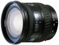

AF 20-35/3.5-4.5
这头果真是美家非主流广角，点评这么少。 A7入了一直缺个变焦广角。某天淘宝上看到这个2035，成色很新，焦段也是我想要的，用了个FE套头的钱拿下。
第一感觉，真心轻便，和A7很搭。呃，至少比我之前挂机的S35ART要轻便很多，但做工并不差。 其次色彩浓郁，20端形变控制得不错。两端最大光圈勉强可用，收一档有较大改善。焦外很柔和。 再有焦段十分合理，下面有兄弟说这头不长不短，我觉得刚刚好，十分喜欢，太广画质没保理证，太近又有很多替代品，2035刚好是广角中最常用的焦段，变焦倍数少于2，画质也有保证
一切胶片时代的镜头缺点都有。但用在数码时代都是在可以接受范围。
色彩极好，但有点炫光，不是内对焦。
二手便宜，色彩极好，其实只要色彩好就行了，这个头的分辨率还是能满足要求的。
有点炫光，居然不是内对焦，前口转动，真是可惜了。
4.5分
轻便，焦段使用基本够用。用在数码机器上变形控制非常好。
遮光罩一般，想配个镜头盖，很难，至今还在晃悠中。
成像优秀，2手性价比高
试拍过，成像及色彩可比上17-35/3.5G,优于17-35/2.8-4D，M家广角端不错选择。
塑料感重，在非全幅上无优势
17-35/2.8-3.5没用过,不好比.
边缘解像高,色彩不错.
不是恒定光圈,口径太大了,抗眩光级差.遮光罩没用.镜头盖不是中间捏开的.
成象很有M家的色彩特点，分辨率也很好，做工也不错，但感觉很轻，塑料感强，原配光罩几乎无用。20端变形太大，拍风景还可以，拍建筑不行。焦段在数码上也还较适用。
见总评。
塑料感强，原配光罩几乎无用
成像优秀,做工不错。
轻。 成像优秀，尤其用于数码机，使用的实际是中心成像区域，全画面成像非常均匀。 做工不错。 价格可以接受。
轻。 20MM端桶变比较严重。 近摄功能差。
手感塑料感严重，成像素质优秀
17-35g后的原厂唯一选择 价格是个大优势
焦段稍微不是很够用，不长不短的
本人刚买下这只镜头,试片后,认为解像力极高,色彩饱和调焦准确,而且变形控制的很好,这就是美家对镜头在做工上的风格,应该说,除17--35G头外,美家的超广角镜头就只有这只镜头了,特别是变焦段运用对构图很方便,虽然我买的很便宜,而且成色又很好,但这只镜头,产量不高,特别是二手市场不太多见,既便有价格不便宜.我用实用的体会奉告美家的影友,如喜欢广角的朋友们,在二手市场见到该镜头应该毫不犹豫的买下,即使以后在数码上*上1.5倍,也在30MM焦段,京广不成问题,起码比现在美家刚出的17--35新的镜头强多了(现在的镜头)用料不如以前而且价格很贵)我从不买副厂镜头,因为一份钱,一份货,只有错买,哪有错卖的.还提醒一下,超广角镜头,不能少遮光罩.
做工优秀,份量适中构图方便,综合素质高.
价格太高.
三百美元不到买了个新的（ebay)， 价格不错。如果去店里买个 将近五百块的， 性价比就不高了。
小巧方便。颜色不错。 解像力也挺好。
边缘画质有些下降